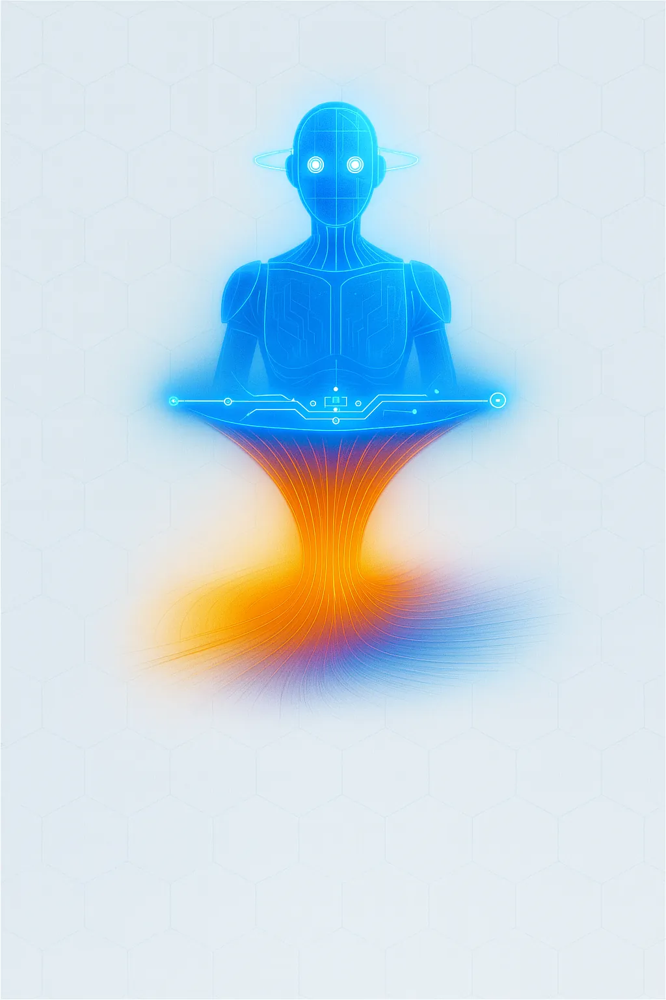
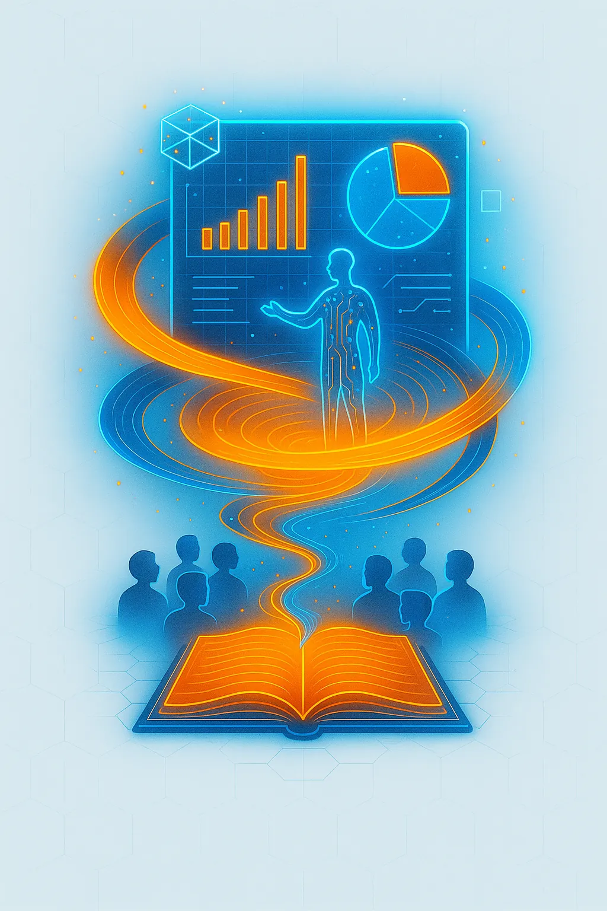
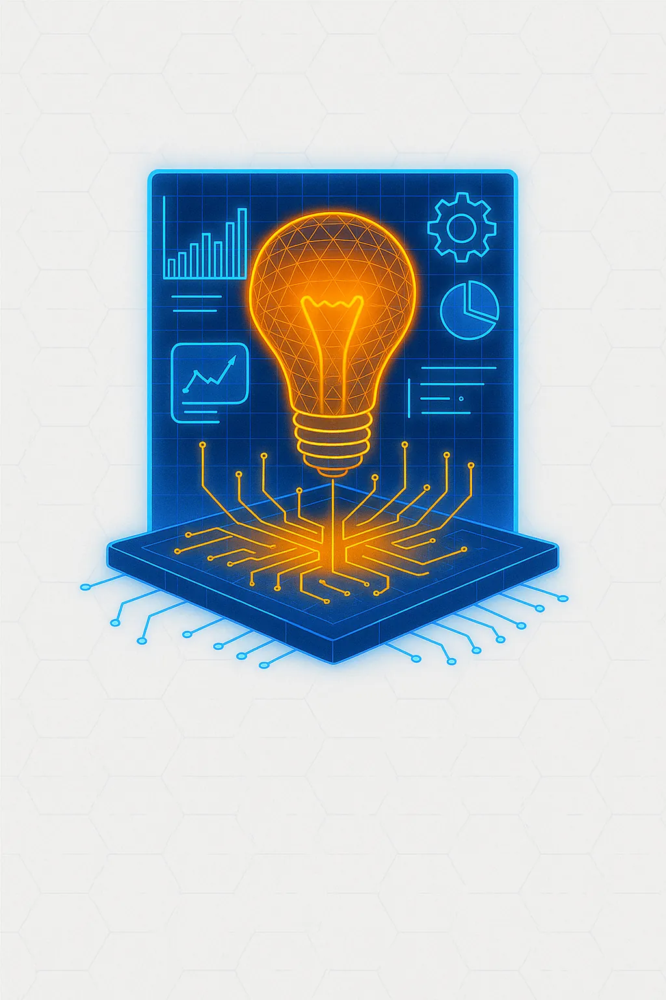
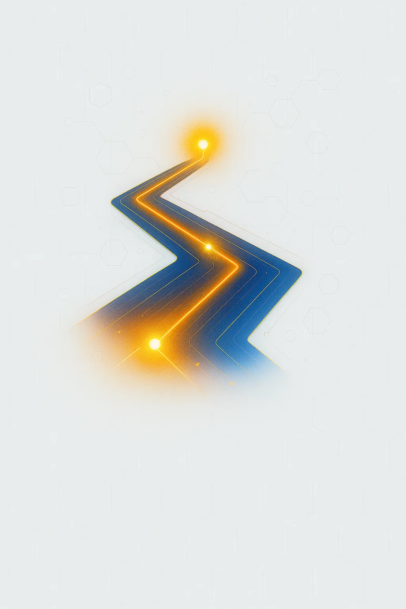
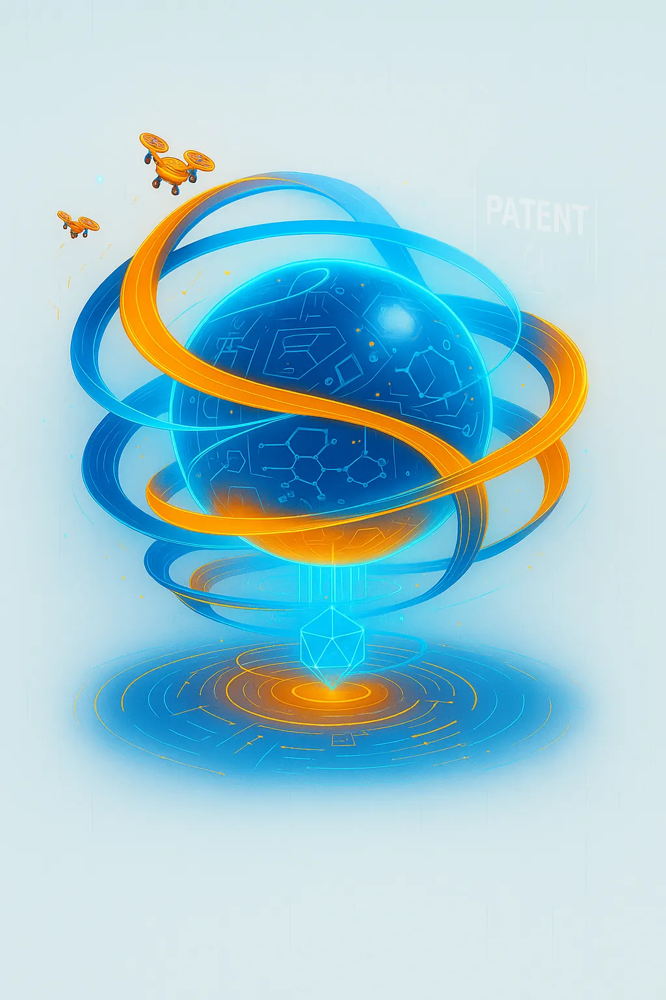

Solutions
ProcessFlow X
Digital Edge
Story Spark
SmartTech Integration
Innovation Academy
Innovate BluePrint
Market Lens
Code Craft
Techflow Management
Patent Forge
Zero to Launch

ProcessFlow X
Process Optimization and Automation
We simplify and automate your workflows,
So you achieve more in less time and with fewer errors.
Digital Edge
Strategic Digital Transformation
We redesign processes and apply technology to modernize your company.
So you gain efficiency, reduce costs and scale with solidity.

StorySpark
High-Impact Executive Presentations
We turn complex ideas into powerful executive presentations that connect with your audience.
We combine strategic storytelling and flawless design so every message inspires, convinces and generates real impact.
SmartTech Integration
Advanced Technology Integration
We drive your company's evolution by applying AI, IoT and cutting-edge technology solutions.
Our approach turns innovation into a competitive advantage, optimizing your operations and opening new growth opportunities.
Innovation Academy
Executive Training in Innovation
We train your teams in creative thinking and technological skills.
So innovation becomes part of your organization's DNA.

Innovate Blueprint
Innovation Strategy and Culture
We design comprehensive strategies that transform your company into a true creative and competitive hub.
With Innovate Blueprint, innovation stops being just a concept and becomes tangible results that drive your growth.
MarketLens
Market Intelligence and Technology Trends
We analyze your industry and identify strategic opportunities.
So you make decisions backed by data and a vision for the future.
CodeCraft
Custom Software Development
We build smart, adaptable software designed specifically to power your business model. Our solutions turn technology into an engine for efficiency, innovation and growth, making sure it works in your favor and keeps you always one step ahead.

Techflow Management
Technology Project Management
We manage your projects with agility, ensuring quality and compliance.
So your ideas reach the market without delays or cost overruns.

Patent Forge
Patent Development and Management from Scratch
We create, document and register your patents starting from the initial idea.
So your innovation is protected and 100% yours.
Zero to Launch
Product Creation and Validation
We take your idea from a sketch to a tested product ready to launch.
So you invest only in what truly has potential.